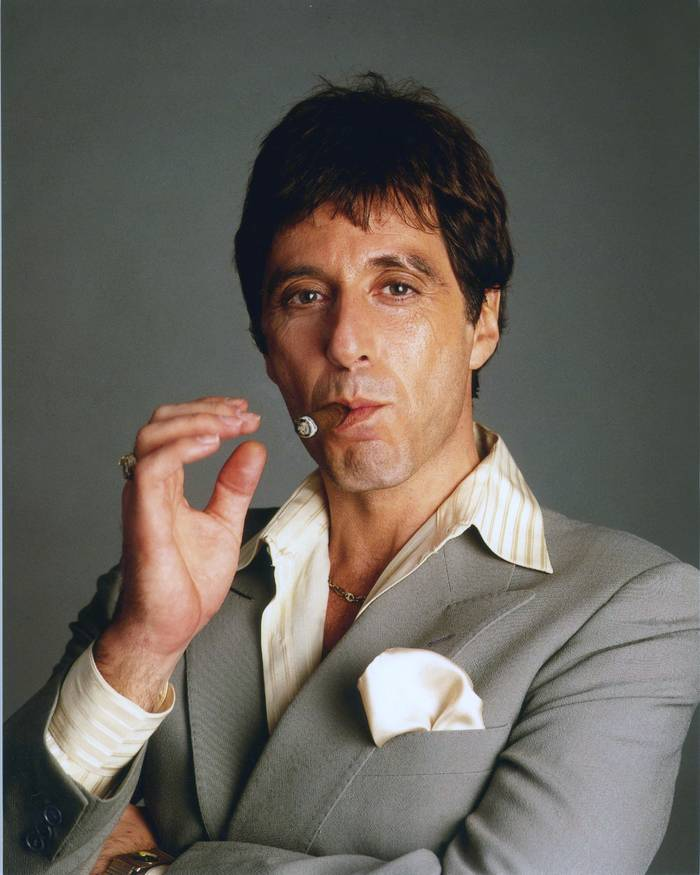

 Alfredo James Pacino (Nueva York, 25 de abril de 1940), más conocido como Al Pacino, es un actor de cine, teatro y televisión estadounidense, habiéndose desempeñado ocasionalmente como guionista, director y productor. Su carrera abarca siete décadas, desde sus inicios en la escena teatral neoyorquina hasta su éxito en el cine, obteniendo numerosos premios y honores, incluidos los premios Óscar, Emmy, Globo de Oro y Tony, siendo uno de los actores del siglo xx que más reconocimientos ha recibido.5 Es conocido por haber interpretado personajes problemáticos y outsiders,6 con una presencia intensa y explosiva,78 lo que lo llevó a ser catalogado por varios medios como uno de los mejores actores de su generación y uno de los más representativos del cine estadounidense de la década de 1970.